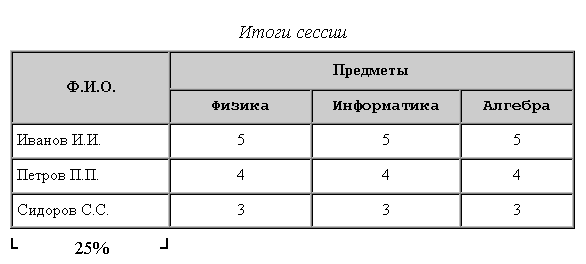
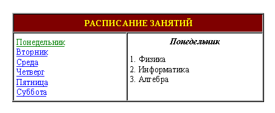

Лабораторные задания по курсу "Введение в Интернет"
Создать документ,
в котором в заголовке окна браузера должна быть надпись
"Лабораторная 3-1".
С использованием команд создания таблицы сформировать таблицу по указанному
варианту.
Обратить внимание на ширину первого столбца
(задать в процентах от ширины таблицы),
шрифт (курсив, Courier New, Arial) и расположение
текста (по центру, слева, справа).

Используя описанные команды, создать документ, в котором в заголовке окна браузера должна быть надпись "Лабораторная 3-2", а экран разделен на 3 фрейма:
Это должно выглядеть так:

Обязательно
Высота фрейма head - 10% от высоты экрана.
Ширина фрейма index - 30% от ширины экрана.
В файлах d1.htm ... d6.htm название дня недели сделать
курсивным заголовком по центру, а занятия перечислить нумерованным списком.
Цвет гиперссылок и фона подобрать самостоятельно.